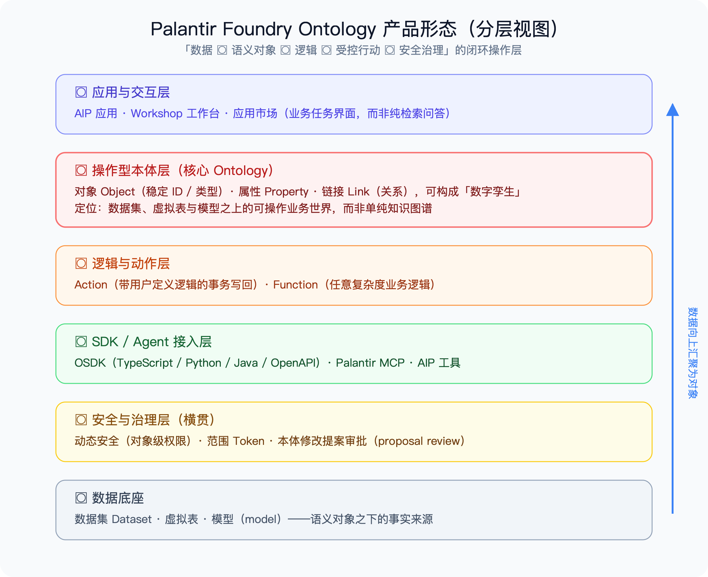
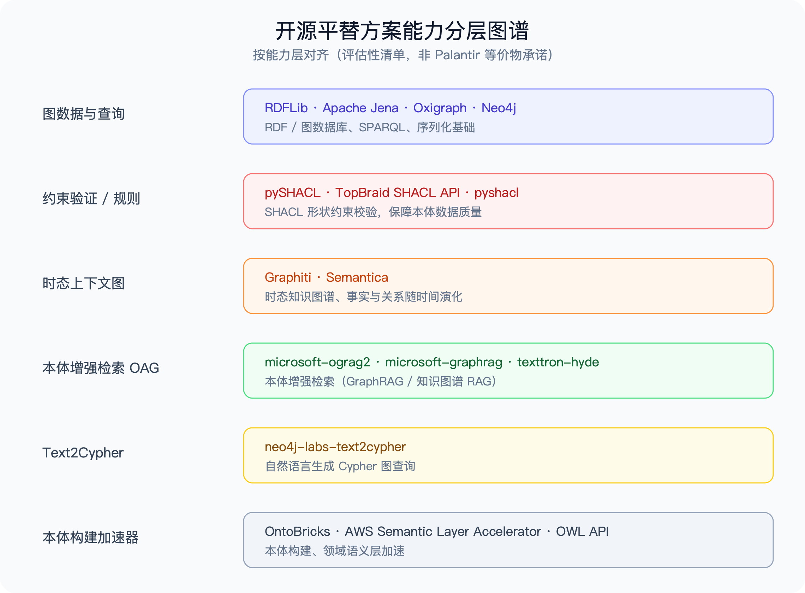
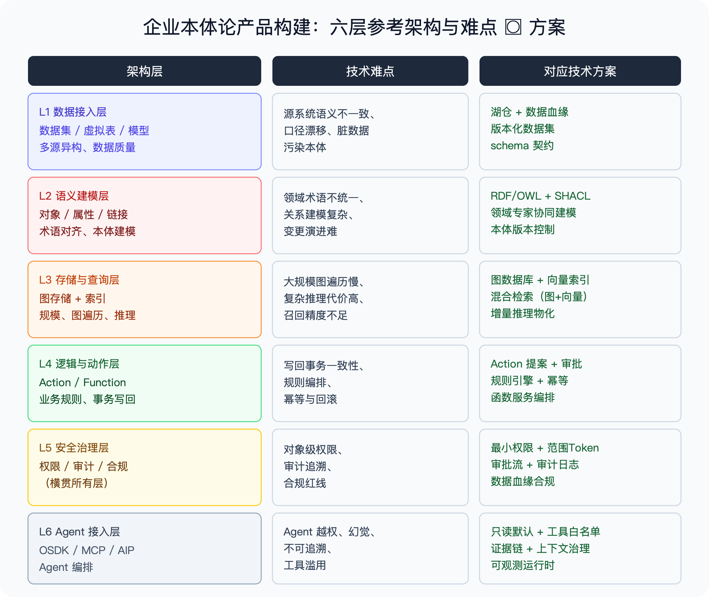
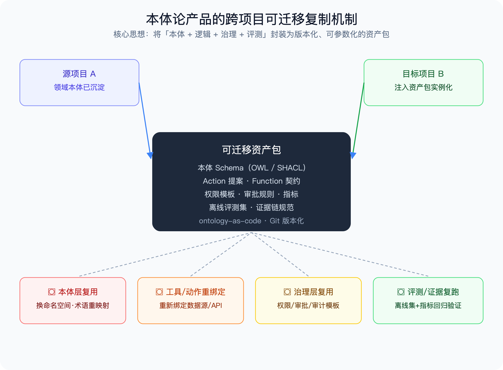

本报告基于
oag-deep-research仓库的调研材料整理。所有结论区分三类证据：Palantir 官方产品文档与技术博客（描述公开产品主张）、同行评审论文与公开实现（建立可验证基线）、以及本仓库本地浅克隆的静态评估。配图采用 SVG 与 GIF 动画，SVG 位于
assets/目录，数据流图位于prototype/prototype-near/out/。
本报告回答四个核心问题：Palantir 本体论产品是什么、开源平替有哪些、企业如何自建、如何跨项目迁移。
核心结论：
Palantir 的核心产品是 Foundry 及其上的 AIP（AI Platform），其本体论能力统称为 Ontology（本体）。它不是一个独立售卖的知识图谱产品，而是 Foundry 平台内建的操作型语义层。
Palantir 的 Ontology 一句话定位：把企业分散的数据、业务规则、业务动作和权限，组织成同一套「可操作业务世界」，再在这个世界之上承载应用、分析与 Agent。它区别于传统知识图谱的关键在于：本体不是给分析师查询用的静态图，而是业务系统的可写、可动作、可治理的数字孪生底座。

从下到上六层，构成 Palantir 本体的完整产品形态：
| 层级 | 组件 | 产品形态说明 |
|---|---|---|
| ① 应用与交互层 | AIP 应用、Workshop 工作台、应用市场 | 员工看到的是业务任务界面（告警/任务收件箱、共同运营态势图），而非检索问答框 |
| ② 操作型本体层 | Object（对象）、Property（属性）、Link（链接） | 核心。对象有稳定 ID 与类型，可构成数字孪生；定位在数据集/虚拟表/模型之上 |
| ③ 逻辑与动作层 | Action、Function | Action 是带用户定义逻辑的事务写回；Function 承载任意复杂度业务逻辑 |
| ④ SDK / Agent 接入层 | OSDK（TS/Python/Java/OpenAPI）、Palantir MCP、AIP 工具 | 让外部系统与 Agent 以受控方式读写本体 |
| ⑤ 安全与治理层 | 动态安全（对象级权限）、范围 Token、本体修改提案审批 | 横贯所有层，是 Palantir 的差异化壁垒 |
| ⑥ 数据底座 | 数据集 Dataset、虚拟表、模型（model） | 语义对象之下的事实来源 |
定价信息综合自 Palantir G-Cloud 14 公开报价文档、第三方采购分析平台（BD Emerson / CostBench / modern-datatools）及公开合同披露。Palantir 官方不公布标准价目表，以下为市场观察区间，非官方报价。
商业化形态：Palantir 采用 企业级定制报价（Custom Enterprise Pricing），无公开标准价目。定价按「解决方案复杂度 × 数据规模 × 用户数」三维度逐单谈判，合同通常按年订阅（SaaS License + 实施服务）。
市场观察区间（2024–2026 公开合同与采购分析）：
| 档位 | 年费量级 | 典型客户画像 | 包含内容 |
|---|---|---|---|
| 入门/单场景 | ~$250K – $500K/年 | 中型企业、单一用例试点 | Foundry 基础 + 单本体域 + 标准支持 |
| 部门级 | ~$500K – $1.5M/年 | 大型企业单部门、多场景 | Foundry + AIP 接入 + 多本体域 + 实施服务 |
| 企业级 | $1.5M – $5M+/年 | 大型集团、跨部门部署 | 全平台 + 定制开发 + 驻场工程师 + 高级治理 |
| 政府/国防 | 千万美元级合同 | 政府机构、军方 | 定制安全等级 + 私有部署 + 长期服务 |
成本结构特征： - License 订阅：按「数据量 + 用户席位 + 场景数」阶梯计价，是主要成本项。 - 实施服务：Palantir 部署通常捆绑 Forward Deployed Engineer（FDE）驻场服务，人天费率约 $2,000–$3,500，是隐性成本大头。 - 锁定效应：本体模型、Action 逻辑、数据血缘均沉淀在 Foundry 平台内，迁出成本高，续约议价能力弱。
与开源自建的成本对比：对中大型企业，Palantir 年费 ≈ 3–5 名高级工程师年薪的总拥有成本（TCO）；若企业已有数据平台团队且场景边界清晰，用开源组件自建语义层的 3 年 TCO 通常低于 Palantir 单年订阅费，但需自行承担语义建模与治理的工程化成本（见第三节难点分析）。
关键结论：Palantir 的定价模型决定了它更适合「数据基础薄弱、愿意用资金换时间」的大型组织；对已有数据工程能力、追求可控成本与数据主权的企业，「开源组件 + 自建本体层」是更优路径——这正是本报告第三、四节的重点。
注意：没有任何单一开源项目是 Palantir Foundry 的 1:1 等价物。以下是按能力层对齐的评估性清单，用于说明「用开源组合能拼出本体论产品的哪些能力」。

以下清单按能力层对齐，所有仓库均经 GitHub API / PyPI / Maven 实时核实（核实日期 2026-08-14），标注版本号、License、Star 数与集成复杂度评级。
⚠️ 存疑剔除：原清单中的
Semantica（时态上下文图）与AWS Semantic Layer Accelerator（本体构建加速器）经 GitHub 全站检索未发现活跃开源仓库，已剔除。时态图能力由getzep/graphiti（29.9K★）覆盖；语义层加速由databrickslabs/ontobricks（Databricks Labs 官方）替代。
| 能力层 | 仓库 | 最新版本 | License | Stars | 说明 | 集成复杂度 |
|---|---|---|---|---|---|---|
| 图数据与查询 | RDFLib/rdflib | 7.6.0 (PyPI) | BSD-3-Clause | 2.5K | Python RDF 库，解析/序列化/SPARQL | ★☆☆ 低 |
| 图数据与查询 | apache/jena | 6.1.0 (Maven) | Apache-2.0 | 1.4K | Java RDF/SPARQL 全栈框架 | ★★☆ 中 |
| 图数据与查询 | oxigraph/oxigraph | 0.5.9 (npm) | Apache-2.0 | 1.8K | Rust 高性能 SPARQL 图存储 | ★★☆ 中 |
| 图数据与查询 | neo4j/neo4j | 2025.03.0 | GPL-3.0 ⚠️ | 17.1K | 属性图数据库，商业使用需注意 GPL 传染性 | ★★☆ 中 |
| 约束验证 / 规则 | RDFLib/pySHACL | 0.40.1 (PyPI) | Apache-2.0 | 339 | Python SHACL 形状约束校验 | ★☆☆ 低 |
| 约束验证 / 规则 | TopQuadrant/shacl | 1.5.0 | Apache-2.0 | 244 | Java SHACL API（TopBraid 内核开源版） | ★★☆ 中 |
| 时态上下文图 | getzep/graphiti | 0.29.3 (PyPI) | Apache-2.0 | 29.9K | 时态知识图谱，事实/关系随时间演化，LLM 原生 | ★★☆ 中 |
| 本体增强检索 | microsoft/graphrag | 3.1.1 (PyPI) | MIT | 35.5K | 微软 GraphRAG，图结构增强 RAG | ★★☆ 中 |
| 本体增强检索 | microsoft/ograg2 | - | MIT | 136 | 微软 OGRAG（Ontology-Grounded RAG）发布版 | ★★☆ 中 |
| 本体增强检索 | texttron/hyde | - | 无（研究代码） | 583 | HyDE 假设文档嵌入检索方法 | ★☆☆ 低 |
| Text2Cypher | neo4j-labs/text2cypher | - | CC0-1.0 | 242 | 自然语言转 Cypher 数据集与微调指令 | ★☆☆ 低 |
| 本体构建加速器 | owlcs/owlapi | 5.5.1 (Maven) | Apache-2.0 / LGPL | 921 | Java OWL 2 本体构建/解析 API | ★★☆ 中 |
| 本体构建加速器 | databrickslabs/ontobricks | - | NOASSERTION ⚠️ | 273 | Databricks Labs 官方：Unity Catalog → 物化知识图谱 + MCP 工具暴露 | ★★☆ 中 |
集成复杂度评级说明：★☆☆ 低（pip/maven 安装即用，API 稳定）｜★★☆ 中（需配置存储/索引，有一定学习曲线）｜★★★ 高（需深度定制或二次开发）。
LICENSE 文件确认商用条款（Databricks Labs 项目通常采用 Databricks License）。调研结论明确：开源工具能覆盖「图存储、约束校验、检索增强、本体构建」等能力层，但难以覆盖 Palantir 的三个护城河：
因此「开源平替」的正确姿态是：用开源组件自建一个满足自身场景的语义层 + 操作层，而非寻找等价替代品。

下图展示 Ontology 从数据源到业务应用的完整数据流，涵盖六层架构之间的数据流向、Action 写回闭环、安全治理横贯、以及审计追溯：
数据流解读：
| 架构层 | 技术难点 | 对应技术方案 | 推荐开源工具（锚点） |
|---|---|---|---|
| L1 数据接入层 | 源系统语义不一致、口径漂移、脏数据污染本体 | 湖仓一体 + 数据血缘；版本化数据集；schema 契约（Schema Contract） | Apache Iceberg / Delta Lake（版本化数据集）、OpenLineage（血缘）、Great Expectations（数据契约校验） |
| L2 语义建模层 | 领域术语不统一、关系建模复杂、变更演进难 | RDF/OWL 建模 + SHACL 约束校验；领域专家低代码协同；本体版本控制（ontology-as-code） | owlcs/owlapi 5.5.1（OWL 2 构建）、RDFLib/rdflib 7.6.0（RDF 解析）、RDFLib/pySHACL 0.40.1（SHACL 校验）、WebProtégé（协同建模） |
| L3 存储与查询层 | 大规模图遍历慢、复杂推理代价高、召回精度不足 | 图数据库 + 向量索引双引擎；混合检索（图遍历 + 语义相似度）；增量推理物化 | oxigraph/oxigraph 0.5.9（SPARQL 图存储）、neo4j/neo4j 2025.03（属性图，⚠️ GPL-3.0）、Qdrant / Milvus（向量索引）、apache/jena 6.1.0（推理机） |
| L4 逻辑与动作层 | 写回事务一致性、规则编排、幂等与回滚 | Action 提案 + 审批流；规则引擎 + 幂等设计；函数服务编排 | 自研 Action 层（参照 Palantir Action 模式）、Drools（规则引擎）、Temporal（工作流编排 + 幂等保障） |
| L5 安全治理层 | 对象级权限、审计追溯、合规红线 | 最小权限 + 范围 Token；审批流 + 审计日志；数据血缘合规 | Open Policy Agent (OPA)（策略即代码）、Apache Ranger（细粒度权限）、Marquez（数据血缘） |
| L6 Agent 接入层 | Agent 越权、幻觉、不可追溯、工具滥用 | 只读默认 + 工具白名单；证据链 + 上下文治理；可观测运行时 | MCP Server 自封装（工具白名单）、getzep/graphiti 0.29.3（时态上下文记忆）、Langfuse / OpenTelemetry（可观测） |
按「风险敞口 × 实施成本」两维度排序，P0 = 必须在架构设计期解决，P1 = 需在 MVP 阶段解决，P2 = 可在迭代中完善：
| 优先级 | 难点 | 风险敞口 | 实施成本 | 方案要点 |
|---|---|---|---|---|
| P0 | ① 语义建模成本 | 高（本体质量决定一切上层能力） | 高（人力密集） | 本体建模工程化（OWL/RDF + SHACL 约束）、领域专家低代码协同、ontology-as-code 版本控制；用 microsoft/ograg2 的本体引导建模思路加速初始建模 |
| P0 | ③ 受控写回（Action 一致性） | 高（写操作直接改业务数据，出错即事故） | 中高 | Action 提案 + 审批流 + 幂等设计 + 事务边界；参照 Temporal 的 Saga 模式做补偿回滚 |
| P1 | ④ 对象级安全与治理 | 高（权限失控 = 数据泄露） | 中 | 范围 Token + 最小权限 + 全链路审计；OPA 策略即代码实现对象级权限 |
| P1 | ⑤ Agent 可治理接入 | 高（幻觉 + 越权是 Agent 最大风险） | 中 | 只读默认、工具白名单、证据链约束、可观测运行时；microsoft/graphrag 3.1.1 的社区摘要 + 证据链可作为 Agent 上下文约束 |
| P2 | ② 图与向量的混合检索 | 中（影响召回质量，不直接影响安全） | 中 | GraphRAG 式「图结构 + 向量索引」混合召回，按本体关系做多跳扩展；getzep/graphiti 0.29.3 已内建时态 + 图 + 向量混合 |
落地顺序建议：先解决 P0 的语义建模与写回一致性（这是本体的「地基」），再叠加 P1 的安全与 Agent 治理（这是「围墙」），最后优化 P2 的检索质量（这是「体验」）。跳过 P0 直接做 P2 是本体型项目最常见的失败模式。

可迁移的关键是：将「本体 + 逻辑 + 治理 + 评测」封装为版本化、可参数化的资产包（ontology-as-code），通过 Git 版本管理，在目标项目中「实例化」而非「复制代码」。
| 维度 | 迁移方式 | 关键动作 |
|---|---|---|
| ① 本体层复用 | 复用本体 Schema（OWL + SHACL 形状） | 换命名空间、术语重映射到目标领域词汇 |
| ② 工具 / 动作重绑定 | 复用 Action 提案与 Function 契约 | 重新绑定目标项目的数据源 / API |
| ③ 治理层复用 | 复用权限模板、审批规则、审计规范 | 按目标组织架构重配角色 |
| ④ 评测 / 证据复跑 | 复用离线评测集 + 指标 | 在新数据上重跑回归，验证迁移有效性 |
Step 1：资产化（Assetization） — 把本体从「项目代码」变成「可复用资产」
| 动作 | 产出物 | 工具建议 | 周期估算 |
|---|---|---|---|
| 本体 Schema 代码化 | .owl / .ttl 文件 + SHACL 形状文件 |
owlapi / rdflib 生成，Git 版本控制 | 1–2 周 |
| Action 契约抽象 | Action 接口定义（JSON Schema）+ 审批流配置 | 自研 Action 层，参照 Palantir Action 模式 | 1–2 周 |
| Function 逻辑封装 | 独立可部署的函数包（Docker 镜像或 WASM） | Temporal workflow / 独立微服务 | 2–3 周 |
| 权限模板提取 | OPA Rego 策略文件 + 角色矩阵 YAML | Open Policy Agent | 1 周 |
| 评测集固化 | 离线评测集（问题-答案对）+ 指标脚本 | 自研评测框架，参照 GraphRAG 评测方法 | 1–2 周 |
| 小计 | 本体资产包 v1.0（Git 仓库） | — | 6–10 周（1.5–2.5 月） |
Step 2：参数化（Parameterization） — 把项目耦合点抽象为可配置参数
| 动作 | 产出物 | 关键决策 | 周期估算 |
|---|---|---|---|
| 数据源地址抽象 | config/datasources.yaml |
统一连接器接口（JDBC / REST / 文件） | 1 周 |
| 术语映射表抽取 | config/terminology-map.yaml（源领域 ↔ 目标领域词汇对照） |
需领域专家参与评审 | 1–2 周 |
| 角色矩阵参数化 | config/roles.yaml |
对齐目标组织架构 | 0.5 周 |
| API 端点抽象 | config/endpoints.yaml |
网关统一路由 | 0.5 周 |
| 环境隔离 | env/{dev,staging,prod}.yaml |
敏感配置走 Vault / KMS | 1 周 |
| 小计 | 参数化配置文件组 | — | 4–6 周（1–1.5 月） |
Step 3：实例化 + 回归（Instantiation + Regression） — 在目标项目中落地并验证
| 动作 | 验收标准 | 周期估算 |
|---|---|---|
| 导入资产包 + 注入参数 | 本体 Schema 在目标环境成功加载，SHACL 校验通过 | 1 周 |
| 重绑定数据源 / 工具 | 所有 Action 能正确读写目标系统 | 1–2 周 |
| 术语重映射 | 领域专家评审通过术语一致性 | 1–2 周 |
| 离线评测回归 | 核心指标（召回率 / 准确率 / 一致性）不低于源项目基线的 90% | 1–2 周 |
| 安全合规审查 | 权限矩阵 + 审计日志通过安全团队评审 | 1 周 |
| 小计 | 目标项目上线就绪 | 5–8 周（1.2–2 月） |
总迁移周期估算：15–24 周（约 4–6 个月），其中资产化是一次性投入（首次最慢），后续项目迁移可复用已有资产包，周期压缩至 8–14 周（2–3.5 个月）。
| 角色 | 首次资产化 | 后续项目迁移 | 说明 |
|---|---|---|---|
| 本体工程师（OWL/RDF/SHACL） | 1 人 × 2.5 月 | 1 人 × 1 月 | 核心稀缺角色 |
| 后端工程师（Action/Function） | 1 人 × 2 月 | 1 人 × 1 月 | Action 层开发 |
| 数据工程师（接入/血缘） | 1 人 × 1.5 月 | 1 人 × 0.5 月 | 数据源重绑定 |
| 领域专家（术语评审） | 0.5 人 × 1 月 | 0.5 人 × 0.5 月 | 业务侧投入 |
| 安全/合规（权限审计） | 0.5 人 × 0.5 月 | 0.5 人 × 0.5 月 | 治理审查 |
| 合计 | ~8 人月 | ~4.5 人月 | 后续迁移成本 ≈ 首次的 55% |
terminology-map.yaml 参数化，本体结构保持领域无关。本章基于本仓库
prototype/目录的实际构建成果，验证第三节六层架构中哪些层已被原型覆盖、哪些层尚待补全。原型为纯静态前端（可部署 Vercel），融合prototype-cursor（操作闭环：提案/审批/四权/RAG对照）与prototype-near（多场景图检索）两套能力。
原型内置 4 个业务场景，每个场景包含独立的本体子图（对象 + 链接 + 属性 + 关系关键词 + 属性映射）：
| 场景 ID | 业务域 | 节点数 | 边数 | 对象类型数 | 验证目标 |
|---|---|---|---|---|---|
bank-aml |
银行反洗钱 | 20 | 18 | 5 | Action Proposal 审批写回（发放待审核 + 反洗钱拦截） |
power-grid |
能源知识大脑 | 17 | 15 | 5 | 知识检索 + 多跳推理（设备 → 故障 → 预案） |
supply-chain |
制造供应链 | 14 | 19 | 4 | 供应链图遍历（订单 → 物料 → 供应商 → 风险） |
workshop |
机加一线（夜班温升） | 5 | 6 | 3 | 实时告警 + Action 触发（温度阈值 → 工单派发） |
| 架构层 | 原型覆盖状态 | 已实现能力 | 缺口 |
|---|---|---|---|
| L1 数据接入层 | ❌ 未覆盖 | — | 原型使用预置 JSON 数据，未接入真实数据源；无 Schema 契约、无血缘 |
| L2 语义建模层 | ✅ 已覆盖 | 对象/链接/属性的图结构定义；propMap（属性映射）；relKeywords（关系关键词，用于自然语言匹配） |
无 OWL/SHACL 形式化约束，建模靠前端 JSON 硬编码 |
| L3 存储与查询层 | ✅ 已覆盖 | 力导向图谱可视化；实体识别（从自然语言问题中抽取实体）；两跳图检索 | 无持久化图存储（内存态）；无向量索引，混合检索未实现 |
| L4 逻辑与动作层 | ✅ 已覆盖 | Action Proposal 提案 + 审批写回（原型核心亮点）；审批流模拟 | 无真实事务，写回仅前端状态变更；无幂等/回滚机制 |
| L5 安全治理层 | ⚠️ 部分覆盖 | 四权矩阵（查看/操作/审批/管理四级权限展示）；Context Pack（上下文打包） | 权限仅前端展示，无真实鉴权；无审计日志 |
| L6 Agent 接入层 | ⚠️ 部分覆盖 | 本体 / OAG / 对照三视图切换（验证 OAG 检索 vs 纯 RAG 的差异）；示例问题芯片 | 无真实 LLM 接入；无工具白名单、无证据链 |
bank-aml 场景的本体视图 vs OAG 视图 vs 纯 RAG 对照视图，直观展示了本体引导的检索（OAG）在多跳关系问题上的召回优势。| 优先级 | 行动 | 对应架构层 | 目标 |
|---|---|---|---|
| P0 | 将 bank-aml 场景的 Action Proposal 接入真实后端（含事务 + 幂等） |
L4 | 验证受控写回的工程可行性 |
| P0 | 为 power-grid 场景接入真实数据源（替换预置 JSON） |
L1 | 验证数据接入与 Schema 契约 |
| P1 | 用 Oxigraph 替换内存态图存储，实现持久化 + SPARQL 查询 | L3 | 验证图存储的工程化 |
| P1 | 用 OPA 实现四权矩阵的真实鉴权（替换前端模拟） | L5 | 验证对象级权限 |
| P2 | 接入 LLM（MCP Server + 工具白名单），实现 workshop 场景的 Agent 告警 → 工单闭环 |
L6 | 验证 Agent 可治理接入 |
| P2 | 用 Graphiti 为 supply-chain 场景加时态维度（供应商风险随时间演化） |
L3 | 验证时态知识图谱 |
本报告结论来自 oag-deep-research 仓库以下核心材料：
research/02-palantir-ontology-platform/DEEP_RESEARCH.md — Palantir Ontology 平台模型深度研究research/02-palantir-ontology-platform/deliverables/palantir-product-shape-and-user-workflows.md — 产品形态与员工工作流research/02-palantir-ontology-platform/deliverables/palantir-ontology-oag-expanded-research.md — 扩展研究与可迁移架构research/06-evaluation-selection-and-case-studies/deliverables/ontology-open-source-tool-landscape.md — 开源工具静态评估research/06-evaluation-selection-and-case-studies/deliverables/enterprise-ontology-and-tooling-roadmap.md — 企业落地路线.conclusions/palantir-ontology-research-expansion.md — 维护摘要prototype/README.md + prototype/scenes/*.json — OAG 融合原型（4 场景本体子图与能力清单）Palantir 官方与定价： - Palantir Foundry Plans（官方产品页）— https://www.palantir.com/platforms/foundry/plans/ - Palantir Platform: Foundry & AIP Pricing Document（G-Cloud 14 公开报价）— UK Government Digital Marketplace - BD Emerson: What Palantir Costs（企业采购成本分析）— https://www.bdemerson.com/article/palantir-cost - CostBench: Palantir AIP Pricing 2026（定制报价分析）— https://costbench.com/software/ai-ml-platforms/palantir-aip/
开源仓库（版本/License/Star 核实日期：2026-08-14，来源 GitHub API / PyPI / Maven Central）： - RDFLib/rdflib 7.6.0 — https://github.com/RDFLib/rdflib ｜ BSD-3-Clause - apache/jena 6.1.0 — https://github.com/apache/jena ｜ Apache-2.0 - oxigraph/oxigraph 0.5.9 — https://github.com/oxigraph/oxigraph ｜ Apache-2.0 - neo4j/neo4j 2025.03.0 — https://github.com/neo4j/neo4j ｜ GPL-3.0（商用注意） - RDFLib/pySHACL 0.40.1 — https://github.com/RDFLib/pySHACL ｜ Apache-2.0 - TopQuadrant/shacl 1.5.0 — https://github.com/TopQuadrant/shacl ｜ Apache-2.0 - getzep/graphiti 0.29.3 — https://github.com/getzep/graphiti ｜ Apache-2.0 - microsoft/graphrag 3.1.1 — https://github.com/microsoft/graphrag ｜ MIT - microsoft/ograg2 — https://github.com/microsoft/ograg2 ｜ MIT - texttron/hyde — https://github.com/texttron/hyde ｜ 无标准 License（研究代码） - neo4j-labs/text2cypher — https://github.com/neo4j-labs/text2cypher ｜ CC0-1.0 - owlcs/owlapi 5.5.1 — https://github.com/owlcs/owlapi ｜ Apache-2.0 / LGPL - databrickslabs/ontobricks — https://github.com/databrickslabs/ontobricks ｜ NOASSERTION（需人工核查） - OWL API 官方文档 — http://owlcs.github.io/owlapi/